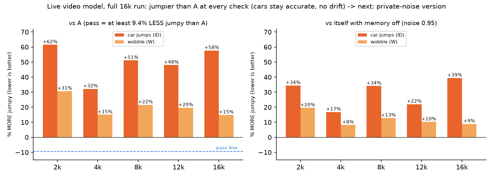
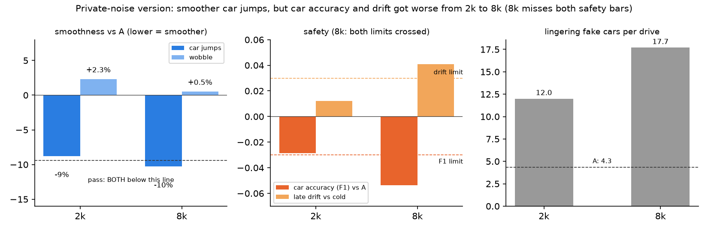
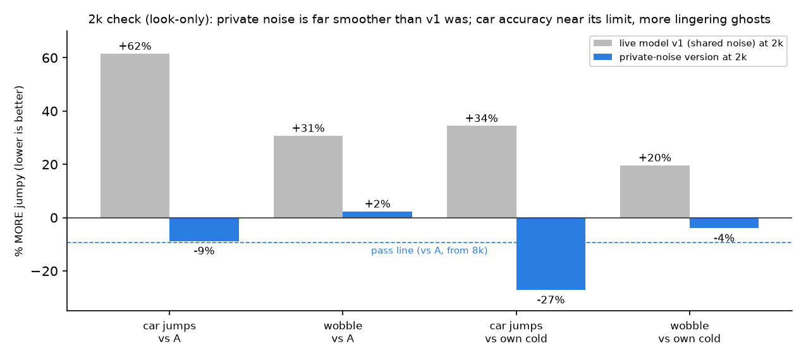

Mini Reality View
A home-made Tesla "Reality View": six real car cameras in, a game-style view from behind the car out. Follow the training live.
Right now
Goal: a smooth video that can run LIVE (frame by frame, never looking ahead), with cars in the right place.
The first live video model (A frozen + small time layers that look back 4 frames) finished all 16,000 training steps. Car accuracy stayed just inside its limit and the picture barely drifted, but it was JUMPIER than A at every check, so it did not pass. That triggers the fix the council agreed in advance: train the same thing again, but give every frame its own private noise while training, so the time layers have to learn from what the past frames show instead of copying the shared noise pattern. It was stopped at 12k by the agreed rule: smoother than A on car jumps, but car accuracy and the picture offset crossed their safety limits at both 8k and 12k. The council is now designing the next version. The memory version below is closed: smoother than A, but drift and car mistakes grew with training.
Closed: the memory version (one past frame) vs A
Memory version vs no memory (closed)
Steps
Live model, all checks (noise mix 0.95)

Bars above zero = jumpier than A. The pass line is 9.4% less jumpy than A (blue). 2k / 4k were look-only; 8k, 12k and 16k counted: no pass on smoothness at any of them, Car accuracy stayed just inside its limit (16k: 0.435 vs A 0.446, allowed down to 0.416, but the error margin reaches below the limit) and it found slightly fewer real cars; drift was near zero (+0.002, limit +0.03). Dropping any one drive does not change the verdict.
Private-noise version at 8k (first check that counts)

Not a pass: wobble did not improve, and car accuracy and drift crossed their safety limits. One more safety miss at 12k stops this version.
Private-noise version: first look (2k, look-only)

Blue = private-noise version at 2k, grey = the first live model at 2k. Below zero = smoother. Look-only: the bars that count start at 8k. Car accuracy is near its limit (0.417 vs A 0.446; allowed down to 0.416) and more fake cars linger (12 vs 4 per drive).
Watch it (live model at 16k)
Parked for now: the car map (placing cars more exactly). It only ever got 1,000-2,000 training steps, so it is not ruled out.
Where we are
The plan from here
Latest news
The last six updates. Everything older is in the lab notes.